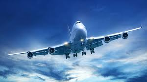

Семейство "AIRBUS" : A220 Family A320 Family A330 Family A350 Family A380 Family
Самолёт — воздушное судно тяжелее воздуха, предназначенное для полётов в атмосфере с помощью силовой установки, создающей тягу и неподвижного относительно других частей аппарата крыла, создающего подъёмную силу. Неподвижное крыло отличает самолёт от махолёта (орнитоптера) и вертолёта, а наличие двигателя — от планёра и мускулолётa. От дирижабля и аэростата самолёт отличается тем, что использует аэродинамический, а не аэростатический способ создания подъёмной силы.

Airbus S.A.S — одна из крупнейших авиастроительных компаний в мире, образованная в конце 60-х годов путем слияния нескольких европейских авиапроизводителей. Производит одноимённые пассажирские, грузовые и военно-транспортные самолёты.
История Airbus: История Airbus берет свое начало в июле 1967 года, когда правительства трех стран – Франции, Германии и Великобритании заключили договор о разработке и начале производства первого европейского пассажирского авиалайнера. Через два месяца началась практическая работа над проектом широкофюзеляжного самолета, получившим предварительное название «European Airbus». Результатом этой работы стал продемонстрированный на авиационной выставке 1969 года в Париже 300-местный авиалайнер А-300, ставший первым детищем нового авиаконцерна, которому в следующем году было присвоено имя Airbus Industrie. Основываясь на нехватке успеха модели A300, компания начала разработку среднемагистрального проекта A320 с инновационной системой управления fly-by-wire. Совершивший первый полет в 1987 году, A320 стал самым большим коммерческим успехом для компании. A318 и A319 являются укороченными вариантами А320, которые с некоторыми изменениями предлагаются Airbus’ом для рынка корпоративных реактивных самолётов (Airbus Corporate Jet). Удлинённая версия А320 известна как A321 и конкурирует с более поздними моделями Boeing 737. Вдохновлённое успехом семейства А320, руководство компании Airbus решилось на разработку семейства ещё больших авиалайнеров. Так появились двухдвигательный A330 и четырёхдвигательный A340. Одной из ключевых особенностей новых самолётов является новая конструкция крыла, оно имеет большую относительную толщину, которая увеличивает его конструктивную эффективность и внутренние объёмы для топлива. Аэробус A340-500 имеет дальность полёта 16,700 километров, это второй результат по дальности полёта среди коммерческих лайнеров, после Boeing 777-200LR (дальность 17,446 км). Однако, A340 не может похвастаться коммерческим успехом по сравнению с конкурирующей машиной оые модели. За всю историю существования компания переживала как успехи, так и неудачи. Тем не менее, Airbus непрерывно активно работал над новыми сериями пассажирских авиалайнеров, результатом чего стали серии А-310, А-320, А-330, А340 и А-380. Впечатляющими стали и производственно-финансовые результаты деятельности концерна. В 2007 году, перед началом экономического кризиса заказчикам было поставлено 463 самолета всех моделей. А общее число заказанных самолетов на тот момент достигло свыше 1300 единиц. В денежном же выражении общий оборот достиг 39 миллиардов евро.